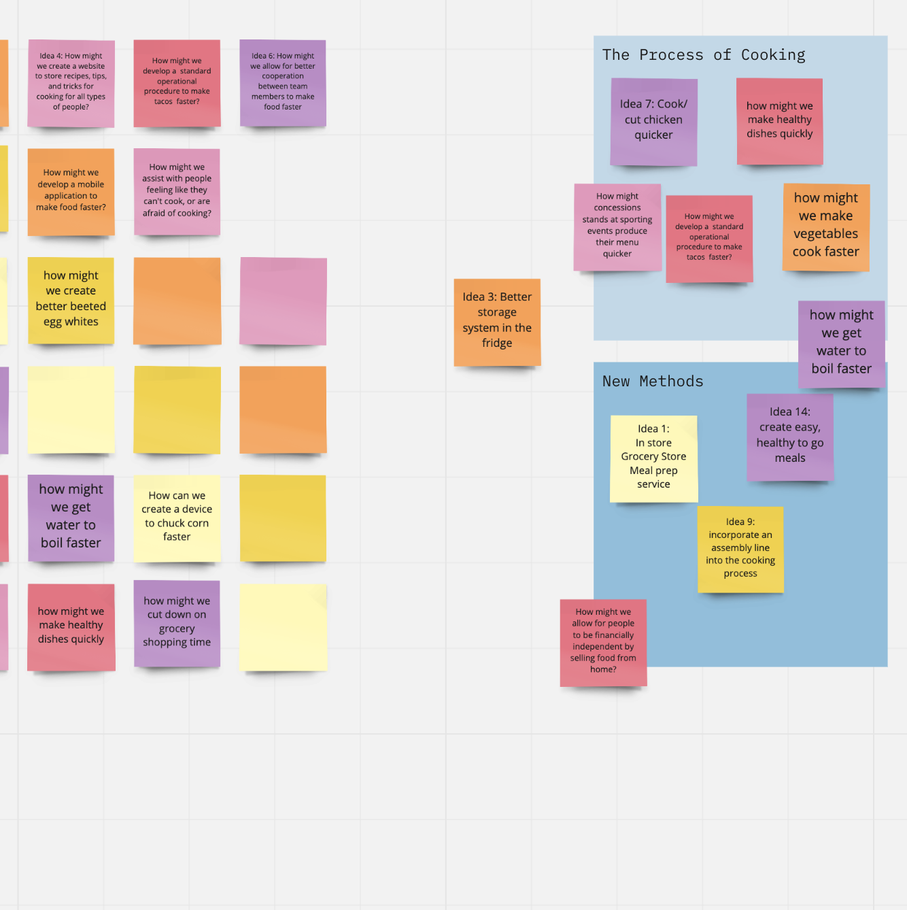
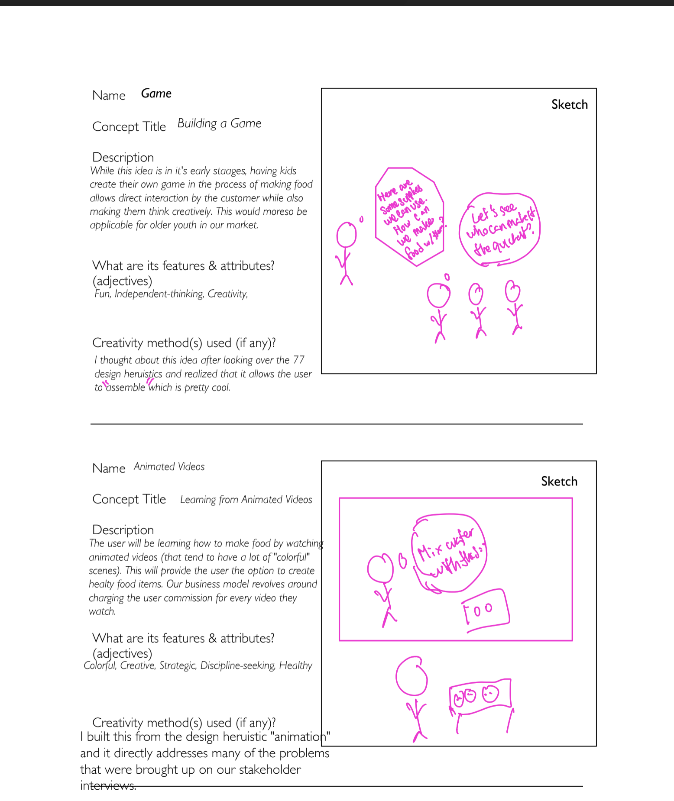

To understand consumer need, our group started off by building a list of POGs, simplifying it in the later stage and thinking about how our users might interact with the product.
I learned from this class that the customers are the most valuable part of any business. While developing the POGs, I learned that the way HMW statements were structured what such that, we keep putting ourselves in the shoes of our consumer. Perhaps, everything that we've done to this point in class is related to understanding our customers. "How might we reduce cooking time?" This was our initial HMW statement. From there we made it such that the statement appealed to a nicher marker and we understood our consumer better. In the process, we came up with a lot of HMW statements but cut it down as we identified that these might not be problems that the customer has. And afterwards, using AEIOU's we brainstormed ways that the same customer might interact with our product. Pretty much all of the design processes (I find that POG and AEIOU are the most critical) relate to understanding our customer better.
Perhaps, the most fun activity of this class was sitting down in front of my laptop developing potential concepts for our product.
It's time to get creative! What can be more creative in a business environment than working on solutions. After deeply understanding the problems that customers might have, our group went on to identify solutions. I had some crazy wild ideas (unsuprisingly). Since we were trying to reduce prep time, most of the concepts that I came up with were processes (i.e. games, animations, etc.) While coming up with these ideas, I learned that listenting to Hans Zimmer helps me quite a lot. It allows me to think of the right solutions!

